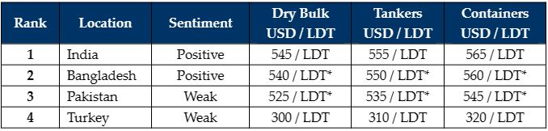

inWeekly Demolition Reports30/01/2023

Following a virtually inert 2022 and a slightly busier start to 2023 at the various recycling destinations, much of the Far East was off celebrating Chinese Lunar New Year holidays this week and it has expectedly been a quieter period – in terms of sales and activity.
A larger number of container vessels have so far been sold for recycling at the start of the year, and we are beginning to see signs that older dry bulk vessels with surveys due may follow suit in the near future as well.
Additionally, following a glut of tanker vessels concluded for recycling at the beginning of 2022, this is the one segment that is still flying and it wouldn’t be entirely unsurprising to see any meaningful recycling take place from this particular sector any time soon.
Prices and demand have also started to bounce back across Indian sub-continent markets (except Pakistan) and Turkey, although whether Pakistan and / or Bangladesh can open LC/s to import units remains an ongoing question of serious concern.
Meanwhile, after a year of sustained instability and turmoil in 2022, currencies (except in Pakistan) have finally started to settle at their current lows and there is growing optimism (certainly in Bangladesh) that talks regarding an IMF loan may bring some much needed liquidity into the country so that end buyers can open L/Cs and import tonnage once again.
Finally, steel plate prices in India, Bangladesh and Turkey were on a slightly upward trajectory this week other than Pakistan, where plate prices and the Pakistani Rupee recorded one of the worst plummets in recent memory.
For week 4 of 2023, GMS demo rankings / pricing for the week are as below.

📄 Download PDF: Ship-recycling-market-insight-week-04-2023-Looking-Up.pdfSource: GMS,Inc. ,https://www.gmsinc.net/gms_new/index.php/web